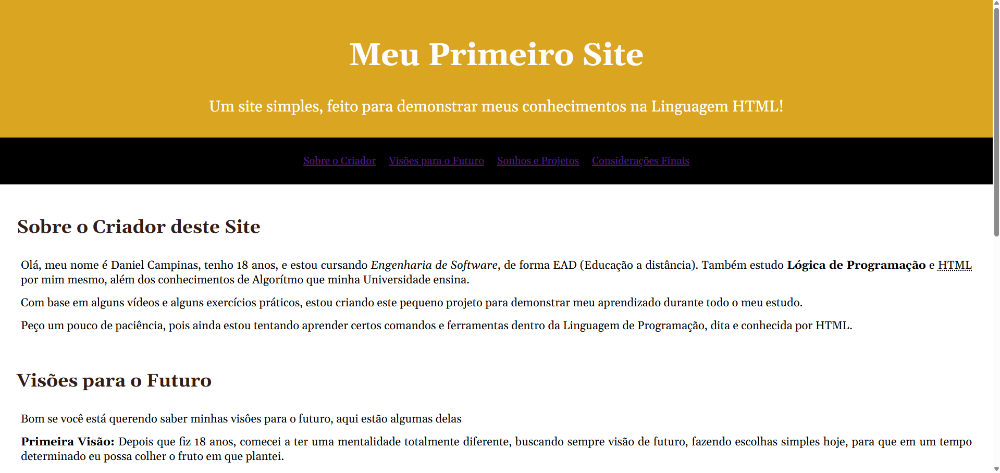
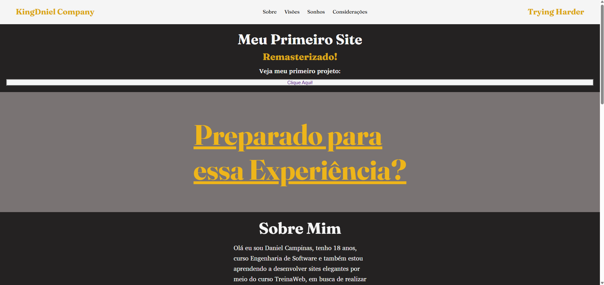
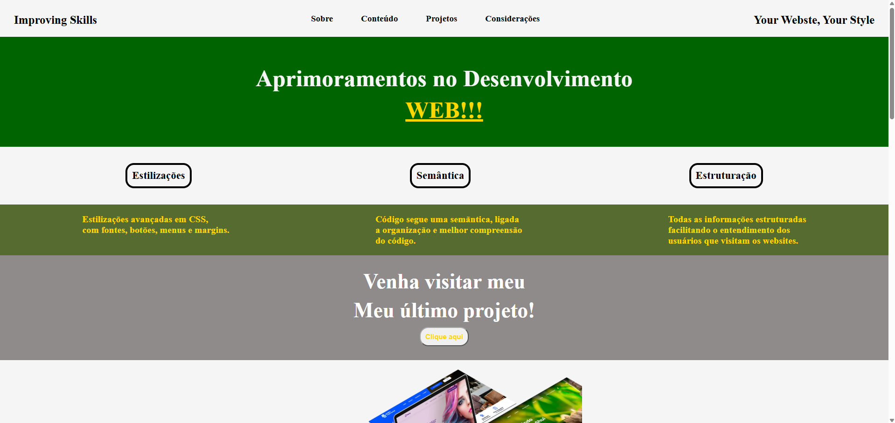

Sobre este Site
Este site tem o objetivo de apresentar meu trabalho,
para você que quer sites profissionais e elegantes
para sua empresa, atraindo os consumidores ao seu site.
Venha me conhecer!
Conheça meus Projetos:
Aqui estão alguns dos projetos que desenvolvi
ao longo da minha jornada na programação e no
desenvolvimento web. Cada projeto representa um passo
da minha evolução, unindo criatividade, aprendizado e
dedicação para criar sites modernos, elegantes e funcionais.



Este é meu primeiro site, desenvolvido
com poucas habilidades e competências de
HTML e CSS. Entretanto, foi o ponto de
partida para início da minha carreira.
Este é o meu primeiro site remasterizado.
Desenvolvido com um conhecimento a mais
em relação a HTML e CSS. Com estilizações,
margins, fontes e organização semântica.
Este é um site programado para testar
alguns conhecimentos e habilidades, para
colocar o meu aprendizado em ação, criando
códigos cada vez mais profissionais.
Meus Cursos

Curso de HTML - do básico
ao
avançado, semântica e organização.
Curso de CSS - do básico ao
avançado, estilizações e design.
Curso de Python - Iniciante, em conjunto
com lógica de programação e algoritmos.
Agradecimentos
Meus agradecimentos são a todos que visitaram a este site
quero agradecer por ler e testemunhar mais um dos meus sites
desenvolvido por mim, Daniel Campinas. Obrigado de verdade!